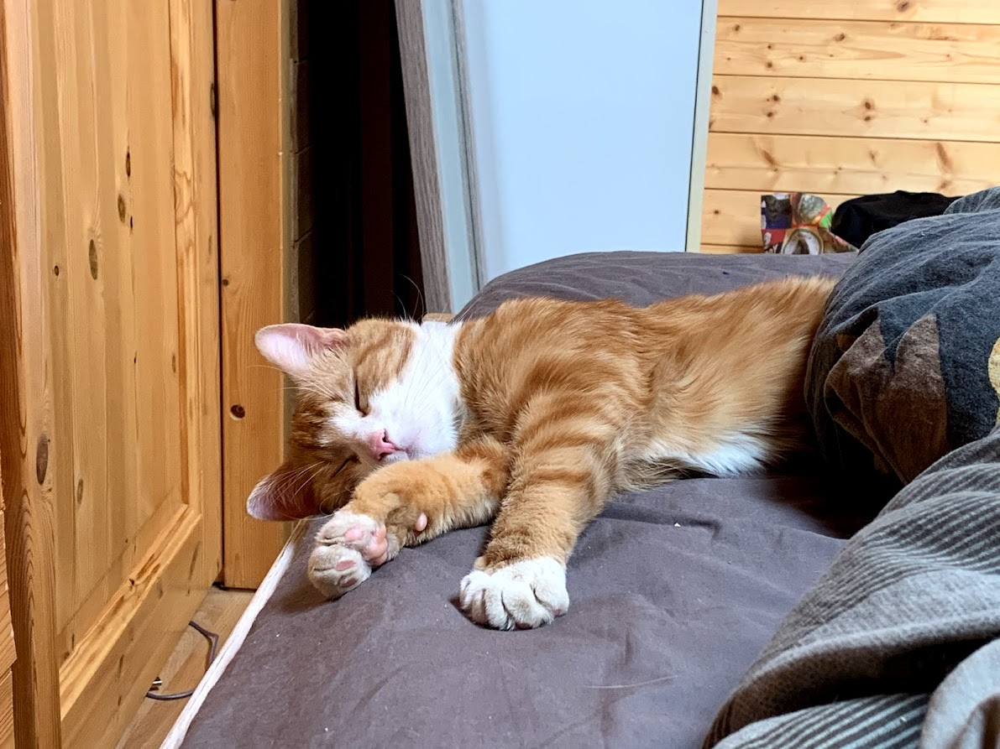
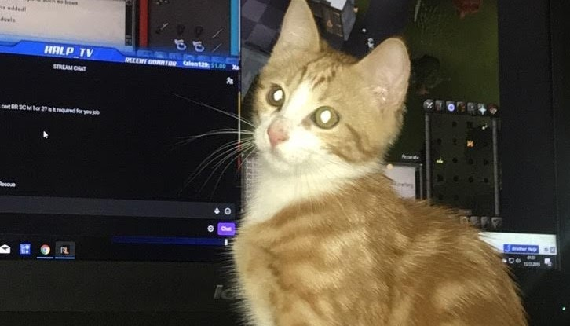
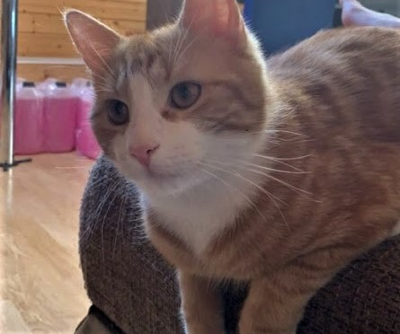
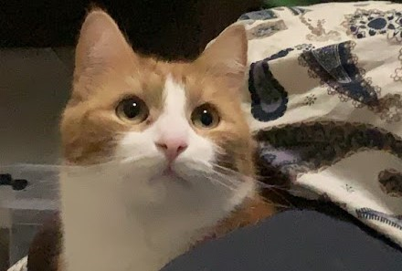
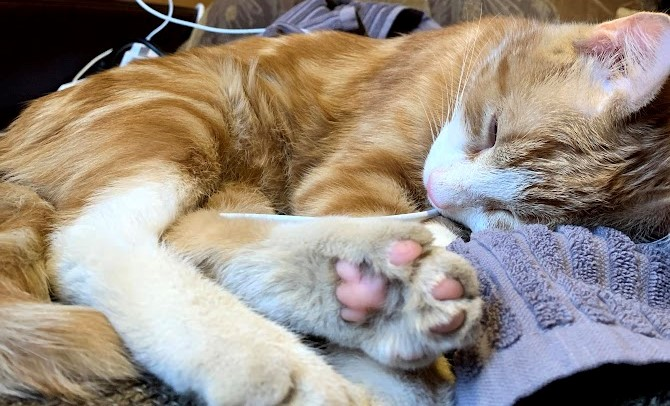

ÄSSU
| Ässu | Esilehele | Seba |
|
ÄSSU |
 |
| Ässu | Esilehele | Seba |
Ässu on iseloomult väga energiline ja uudishimulik.
Ta kõnnib pea kogu aeg korteris ringi ja mängib kõigega, millega saab.
Eriti meeldib talle kui talle midagi visatakse ning ta selle tagasi toob.
Lisaks mängimisele meeldib talle ka tüütu olemine, näiteks taarakorvi mujale nihutamine, kile kakkumine, pappkastidel küünte teritamine.
